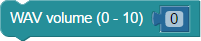
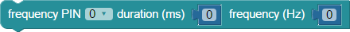

BlocklyProp reference for AUDIO blocks
BlocklyProp blocks for generating audio. See each block for board type compatibility.
WAV play
 This block is ONLY available for the Propeller Activity Board WX board type.
This block is ONLY available for the Propeller Activity Board WX board type.
 This block lauches TWO processors automatically.
This block lauches TWO processors automatically.
The WAV play block sets up both the SD card reader on the Propeller Activity Board, sets up the WAV player object in the Propeller microcontroller, and plays the WAV formatted audio file from the SD card whose filename was typed into the block.
WAV file format must be in the correct format.
Options from our Sound Library reference section:
- Download pre-formatted files from the Sound Library
- Re-format your audio files with the free Audacity software - tutoiral
- Create your own new audio files with Audacity - tutorial
WAV blocks must be used with other types of blocks.
The WAV play block launches processors to manage the SD card and generate the audio oputput. However, once the first processor has launched the others, it will shut itself down if it does not have any other blocks to execute. This breaks the project, and instead of hearing your audio track, you will just hear a buzzing sound. To avoid this, the first processor must keep running. If all you want to do is play the WAV file and nothing else, this can be done with an empty repeat forever block, or a pause block with a duration lasting longer than your audio track, right after the WAV play block.
WAV status
This block is ONLY available for the Propeller Activity Board WX board type.
The WAV status block provides a value of 1 (one/true) if a WAV file is currently playing and a value of 0 (zero/false) if a WAV file is not currently playing.
WAV volume

This block is ONLY available for the Propeller Activity Board WX board type.
The WAV volume block set the volume of the Propeller’s WAV player. A value of 0 is quietest and 10 is loudest.
WAV stop
This block is ONLY available for the Propeller Activity Board WX board type.
The WAV stop block stops playing a WAV file.
frequency out
This block is available for the Propeller Activity Board WX, Propeller FLiP module, or Other board types. Propeller I/O pin availability will vary by board type.
Not available for Badge or Scribbler Robot board types.



The frequency out block generates pulses of the specified frequency and duration. An example use would be generating beeps on a piezospeaker.
- PIN: select the Propeller I/O pin on which to send the signal.
- duration (ms): insert a value block to set the duration in milliseconds for the pulses to last.
- frequency (Hz) insert a value block to set the frequency of the pulses, in hertz.